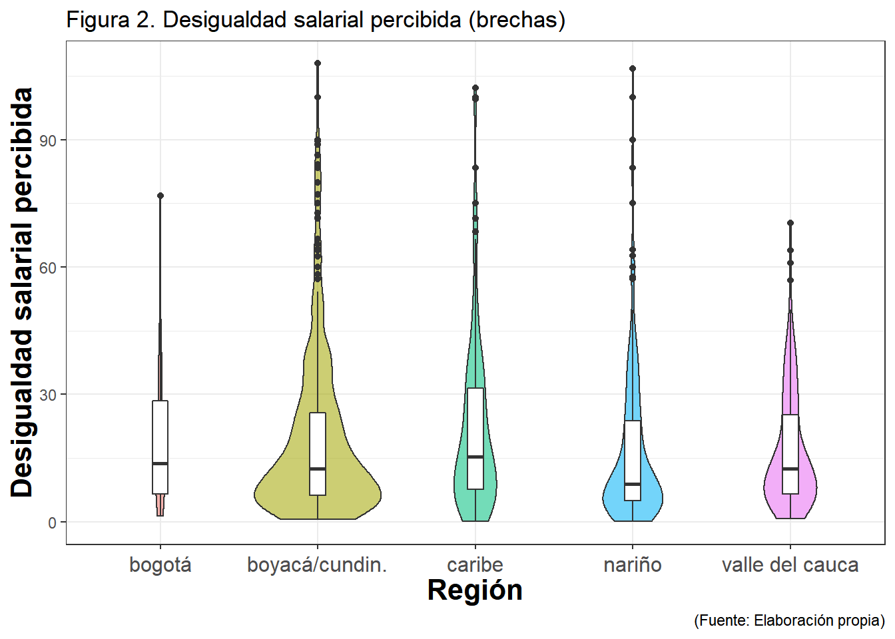

Last updated: 2018-09-23
workflowr checks: (Click a bullet for more information) ✔ R Markdown file: up-to-date
Great! Since the R Markdown file has been committed to the Git repository, you know the exact version of the code that produced these results.
✔ Environment: empty
Great job! The global environment was empty. Objects defined in the global environment can affect the analysis in your R Markdown file in unknown ways. For reproduciblity it’s best to always run the code in an empty environment.
✔ Seed:
set.seed(20180904)
The command set.seed(20180904) was run prior to running the code in the R Markdown file. Setting a seed ensures that any results that rely on randomness, e.g. subsampling or permutations, are reproducible.
✔ Session information: recorded
Great job! Recording the operating system, R version, and package versions is critical for reproducibility.
✔ Repository version: 9bbffa0
wflow_publish or wflow_git_commit). workflowr only checks the R Markdown file, but you know if there are other scripts or data files that it depends on. Below is the status of the Git repository when the results were generated:
Ignored files:
Ignored: .Rhistory
Ignored: .Rproj.user/
Ignored: analysis/codebook_cache/
Untracked files:
Untracked: analysis/descriptives.log
Untracked: analysis/descriptives.tex
Untracked: code/desigualdad_colombia.R
Untracked: data/data2_raw.csv
Untracked: data/data2_raw.por
Untracked: data/data2_raw.sav
Untracked: figure/
Unstaged changes:
Modified: analysis/_site.yml
Modified: code/README.md
Modified: desigualdad_colombia.Rproj
| File | Version | Author | Date | Message |
|---|---|---|---|---|
| Rmd | 9bbffa0 | egarcias | 2018-09-23 | Publish the initial files for myproject |
| html | c3d3c2f | egarcias | 2018-09-21 | Build site. |
NULL| vars | n | mean | sd | median | trimmed | mad | min | max | range | skew | kurtosis | se | |
|---|---|---|---|---|---|---|---|---|---|---|---|---|---|
| X1 | 1 | 1833 | 5.00103 | 0.9187607 | 5.111111 | 5.042718 | 0.8236667 | 1.111111 | 7 | 5.888889 | -0.5442236 | 0.5749761 | 0.0214596 |
| vars | n | mean | sd | median | trimmed | mad | min | max | range | skew | kurtosis | se | |
|---|---|---|---|---|---|---|---|---|---|---|---|---|---|
| X1 | 1 | 1794 | 19.99016 | 19.80588 | 12.80013 | 16.4476 | 13.04707 | 0.0714286 | 107.9719 | 107.9005 | 1.766844 | 3.347619 | 0.467609 |

| vars | n | mean | sd | median | trimmed | mad | min | max | range | skew | kurtosis | se | |
|---|---|---|---|---|---|---|---|---|---|---|---|---|---|
| X1 | 1 | 1783 | 5.184764 | 4.302544 | 4 | 4.453849 | 2.9652 | 0.0066667 | 24 | 23.99333 | 1.601042 | 2.518778 | 0.1018942 |
### Frecuencia de percepción de la desigualdad (qué tan frecuentemente percibe esas situaciones)
| vars | n | mean | sd | median | trimmed | mad | min | max | range | skew | kurtosis | se | |
|---|---|---|---|---|---|---|---|---|---|---|---|---|---|
| X1 | 1 | 1912 | 5.475941 | 1.219691 | 6 | 5.566013 | 1.4826 | 2 | 7 | 5 | -0.4742459 | -0.4395697 | 0.0278937 |
| vars | n | mean | sd | median | trimmed | mad | min | max | range | skew | kurtosis | se | |
|---|---|---|---|---|---|---|---|---|---|---|---|---|---|
| X1 | 1 | 1912 | 5.847803 | 1.749443 | 7 | 6.268628 | 0 | 1 | 7 | 6 | -1.78013 | 2.069265 | 0.0400088 |
### Percepción de la desigualdad económica como comparación social (los que más tienen vs. los que menos tienen)
| vars | n | mean | sd | median | trimmed | mad | min | max | range | skew | kurtosis | se | |
|---|---|---|---|---|---|---|---|---|---|---|---|---|---|
| X1 | 1 | 1891 | 4.227105 | 2.149533 | 4.090909 | 4.085321 | 2.156509 | 1 | 10 | 9 | 0.5420466 | -0.0659312 | 0.0494309 |
| vars | n | mean | sd | median | trimmed | mad | min | max | range | skew | kurtosis | se | |
|---|---|---|---|---|---|---|---|---|---|---|---|---|---|
| X1 | 1 | 1833 | 5.00103 | 0.9187607 | 5.111111 | 5.042718 | 0.8236667 | 1.111111 | 7 | 5.888889 | -0.5442236 | 0.5749761 | 0.0214596 |
### Justificación del sistema económico
| vars | n | mean | sd | median | trimmed | mad | min | max | range | skew | kurtosis | se | |
|---|---|---|---|---|---|---|---|---|---|---|---|---|---|
| X1 | 1 | 1833 | 5.00103 | 0.9187607 | 5.111111 | 5.042718 | 0.8236667 | 1.111111 | 7 | 5.888889 | -0.5442236 | 0.5749761 | 0.0214596 |
| vars | n | mean | sd | median | trimmed | mad | min | max | range | skew | kurtosis | se | |
|---|---|---|---|---|---|---|---|---|---|---|---|---|---|
| X1 | 1 | 1670 | 3.497605 | 1.193524 | 4 | 3.467066 | 1.4826 | 1 | 7 | 6 | 0.1155512 | 0.5315046 | 0.0292061 |
R version 3.5.1 (2018-07-02)
Platform: x86_64-w64-mingw32/x64 (64-bit)
Running under: Windows 10 x64 (build 17134)
Matrix products: default
locale:
[1] LC_COLLATE=Spanish_Spain.1252 LC_CTYPE=Spanish_Spain.1252
[3] LC_MONETARY=Spanish_Spain.1252 LC_NUMERIC=C
[5] LC_TIME=Spanish_Spain.1252
attached base packages:
[1] stats graphics grDevices utils datasets methods base
other attached packages:
[1] ggridges_0.5.0 outliers_0.14 plyr_1.8.4
[4] GPArotation_2014.11-1 knitr_1.20 memisc_0.99.14.9
[7] lattice_0.20-35 sjmisc_2.7.4 sjlabelled_1.0.13
[10] sjPlot_2.6.0 sjstats_0.17.0 lmeresampler_0.1.0
[13] labelled_1.1.0 gridExtra_2.3 data.table_1.11.4
[16] haven_1.1.2 lavaan_0.6-2 psych_1.8.4
[19] stargazer_5.2.2 reghelper_0.3.4 devtools_1.13.6
[22] interplot_0.2.1 arm_1.10-1 MASS_7.3-50
[25] abind_1.4-5 lme4_1.1-17 Matrix_1.2-14
[28] reshape_0.8.7 ggplot2_3.0.0 car_3.0-0
[31] carData_3.0-1 foreign_0.8-70 dplyr_0.7.6
[34] pacman_0.4.6
loaded via a namespace (and not attached):
[1] TH.data_1.0-9 minqa_1.2.4 colorspace_1.3-2
[4] modeltools_0.2-22 rio_0.5.10 rprojroot_1.3-2
[7] estimability_1.3 snakecase_0.9.1 base64enc_0.1-3
[10] glmmTMB_0.2.2.0 mvtnorm_1.0-8 coin_1.2-2
[13] codetools_0.2-15 splines_3.5.1 R.methodsS3_1.7.1
[16] mnormt_1.5-5 effects_4.0-2 bayesplot_1.6.0
[19] workflowr_1.1.1 nloptr_1.0.4 ggeffects_0.5.0
[22] interactionTest_1.0.1 broom_0.5.0 R.oo_1.22.0
[25] readr_1.1.1 compiler_3.5.1 emmeans_1.2.3
[28] backports_1.1.2 assertthat_0.2.0 lazyeval_0.2.1
[31] survey_3.33-2 htmltools_0.3.6 tools_3.5.1
[34] bindrcpp_0.2.2 coda_0.19-1 gtable_0.2.0
[37] glue_1.3.0 Rcpp_0.12.18 cellranger_1.1.0
[40] nlme_3.1-137 stringr_1.3.1 openxlsx_4.1.0
[43] stringdist_0.9.5.1 zoo_1.8-3 scales_0.5.0
[46] hms_0.4.2 parallel_3.5.1 sandwich_2.4-0
[49] pwr_1.2-2 TMB_1.7.14 yaml_2.2.0
[52] curl_3.2 memoise_1.1.0 stringi_1.1.7
[55] highr_0.7 zip_1.0.0 repr_0.15.0
[58] rlang_0.2.1 pkgconfig_2.0.1 evaluate_0.11
[61] purrr_0.2.5 prediction_0.3.6 bindr_0.1.1
[64] labeling_0.3 tidyselect_0.2.4 magrittr_1.5
[67] R6_2.2.2 multcomp_1.4-8 RLRsim_3.1-3
[70] pillar_1.3.0 whisker_0.3-2 withr_2.1.2
[73] mgcv_1.8-24 nnet_7.3-12 survival_2.42-3
[76] tibble_1.4.2 modelr_0.1.2 crayon_1.3.4
[79] rmarkdown_1.10 grid_3.5.1 readxl_1.1.0
[82] pbivnorm_0.6.0 git2r_0.23.0 forcats_0.3.0
[85] digest_0.6.15 nlmeU_0.70-3 xtable_1.8-2
[88] tidyr_0.8.1 R.utils_2.6.0 stats4_3.5.1
[91] munsell_0.5.0 This reproducible R Markdown analysis was created with workflowr 1.1.1